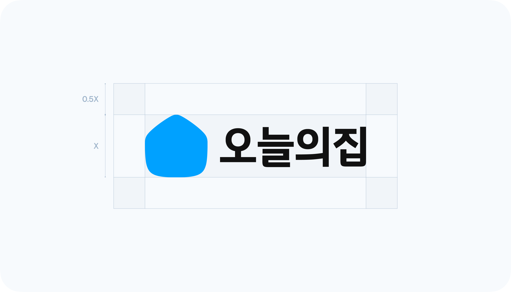
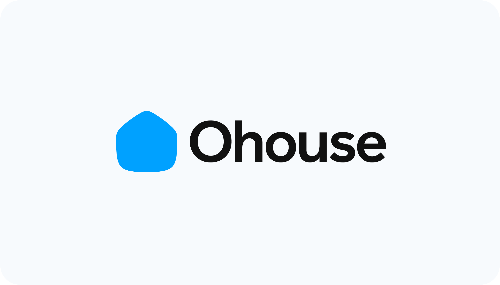
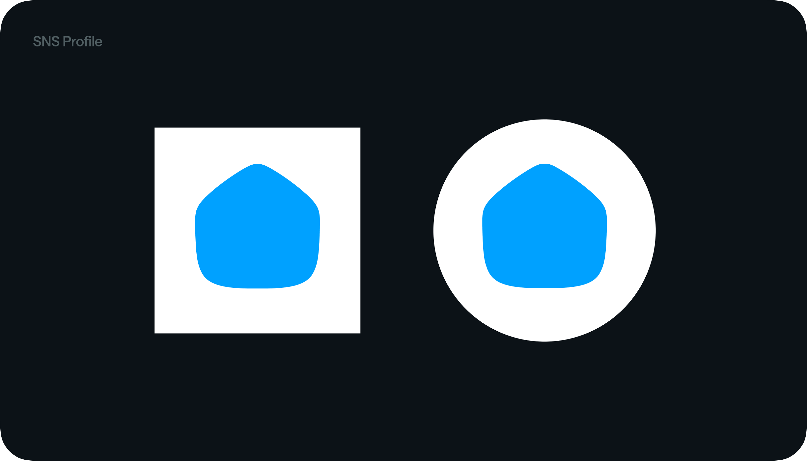
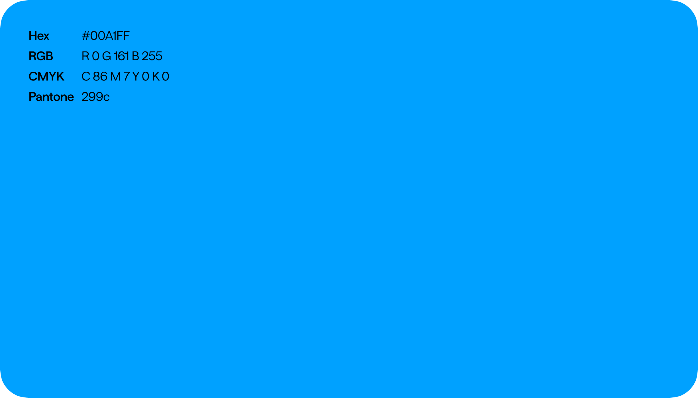

로고
로고는 오늘의집을 상징물로, 사용 방식에 따라 여러 브랜드 이미지에 영향을 줍니다.

사용가이드
조합형 로고는 심볼과 워드마크를 결합한 형태입니다. 오늘의집을 나타내는 영역 전체에서 메인으로 사용합니다. 로고의 시각적 독립성을 위해 규정된 최소 공간(Clear Space)을 다른 매체나 그래픽 요소가 침범하지 않도록 주의하여 사용해 주세요.

앱 아이콘 & SNS 프로필
심볼이 프레임에 감싸져 사용된 형태입니다. 프레임에 따라 앱 아이콘, SNS 프로필로 사용되며 심볼을 앱 아이콘 형태로 커뮤니케이션 하는 경우, 각 채널에서 오늘의집 이름으로 활동하는 경우 이 에셋들을 사용해 주세요.

사용사례
선명한 파란색은 오늘의집을 대표하는 브랜드 컬러입니다. 대표 컬러는 한 지면에서 가장 중요한 영역에 사용되며 대표 컬러가 주목받을 수 있는 사용범위 내에서 사용해 주세요.

오용 사례
브랜드 이미지가 손상되지 않도록 아래의 예시를 참고하여 반드시 표준 형태를 사용해 주세요. 이 외 판단이 어려운 경우 오늘의집 브랜드 디자인 팀으로 문의해 주세요.